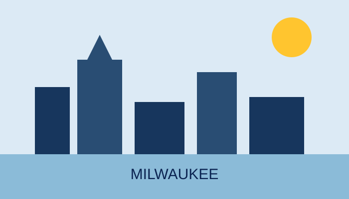

Baseball in Milwaukee
The Milwaukee Brewers have called Wisconsin home since 1970. This site explores the club's history, ballpark, and some of the people whose numbers hang above the field.
Quick Facts
Founded in Milwaukee: 1970, after the Seattle Pilots franchise was purchased and moved to Wisconsin.
Team name: "Brewers" recognizes Milwaukee's long association with the brewing industry.
League: The club began in the American League and moved to the National League in 1998.
Why the Brewers Matter to Milwaukee

Milwaukee's relationship with major-league baseball stretches well beyond the current Brewers. The modern club arrived in 1970, only a few years after the Braves left for Atlanta. Since then, generations of fans have connected summer evenings, tailgating, radio broadcasts, and neighborhood traditions with Brewers baseball.
This project is not affiliated with Major League Baseball or the Milwaukee Brewers. It is designed as a realistic beginner web-development portfolio sample.
Explore the Site
Use the navigation menu to learn how the Seattle Pilots became the Brewers, review the team's home ballpark, meet several retired-number legends, and send a message through the contact form.